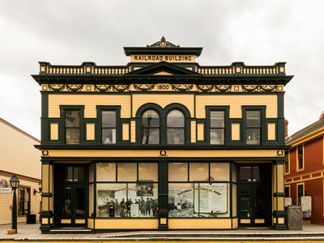
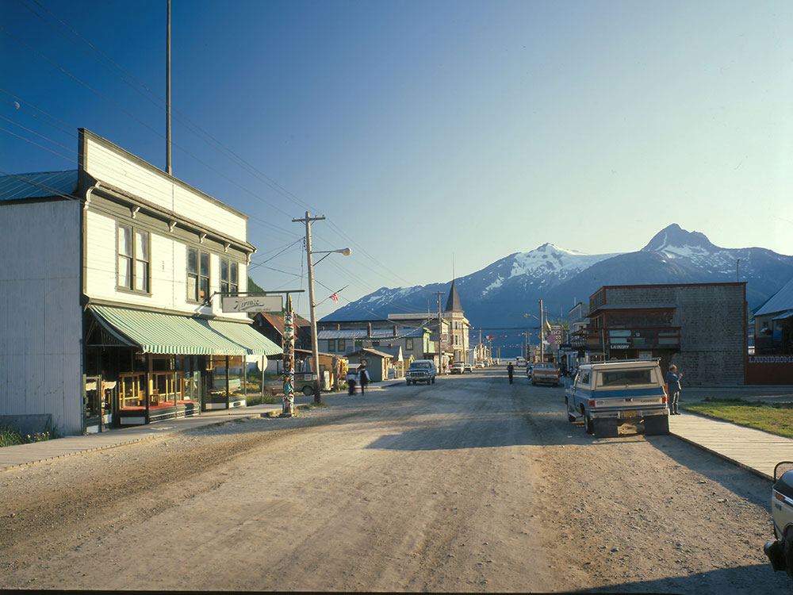
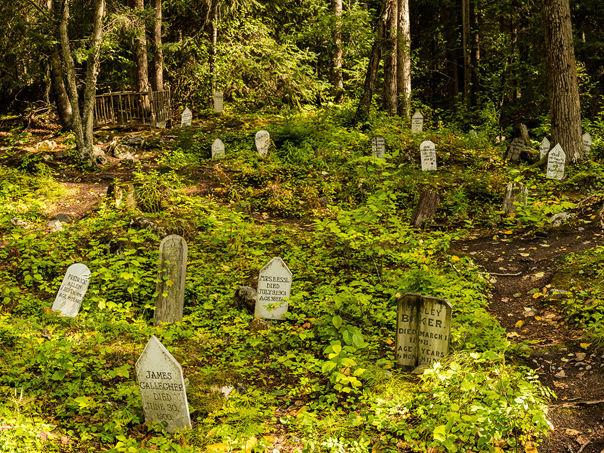
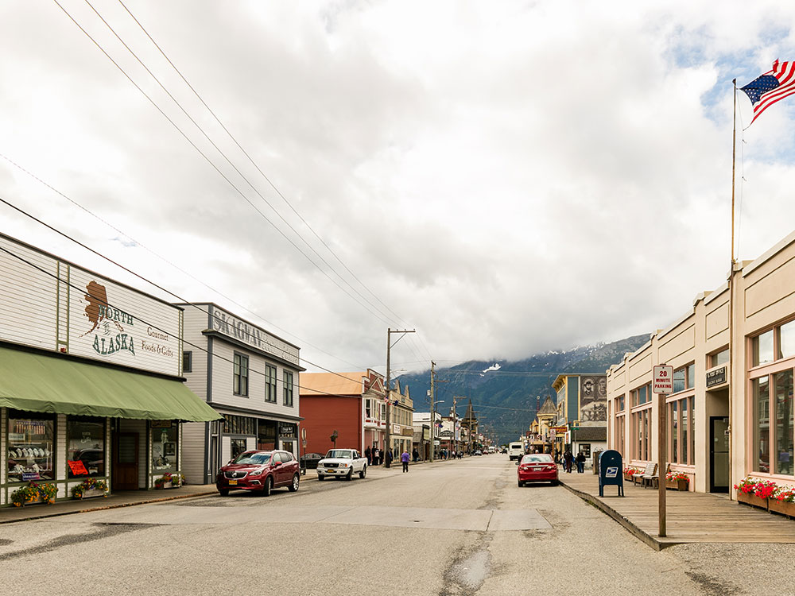
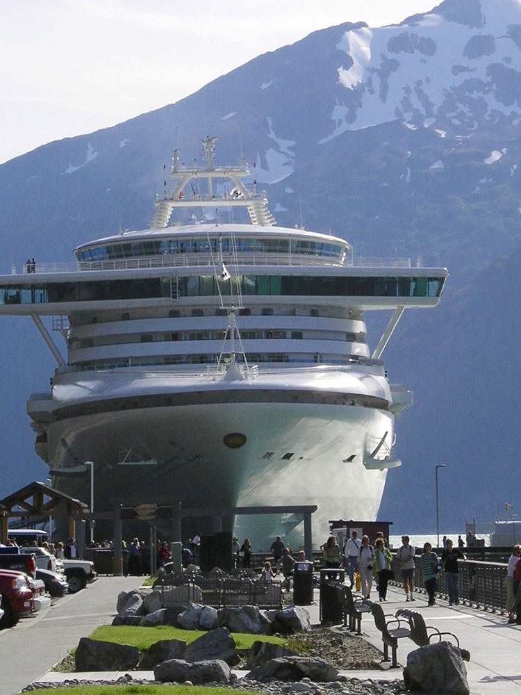
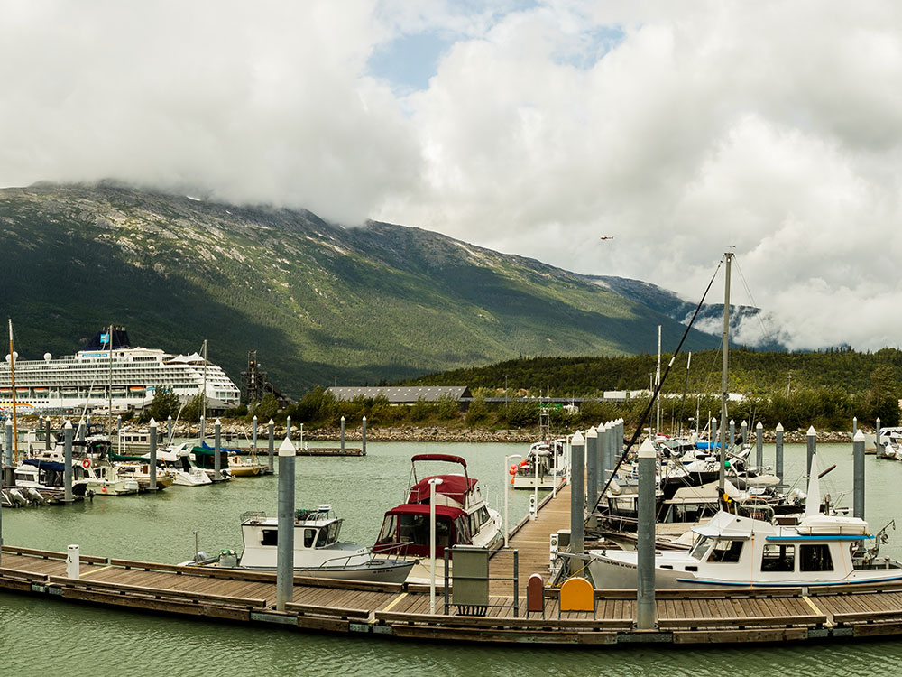
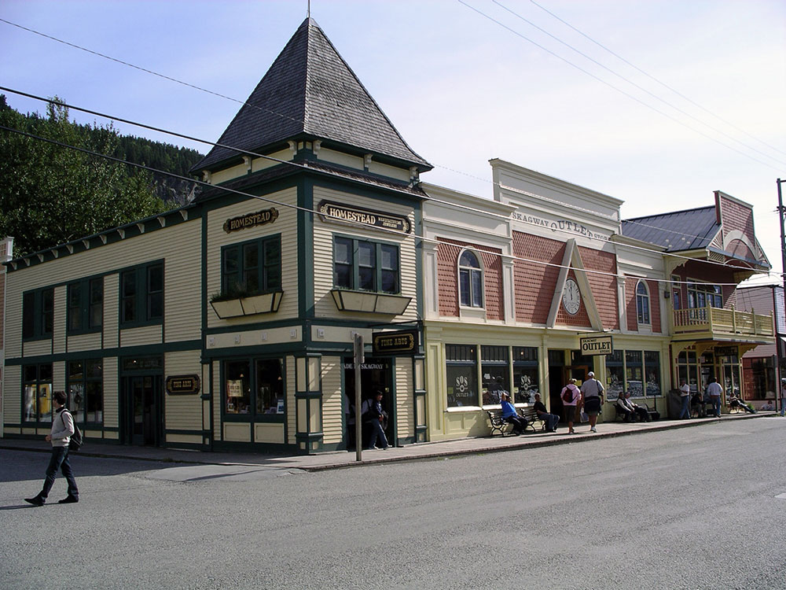
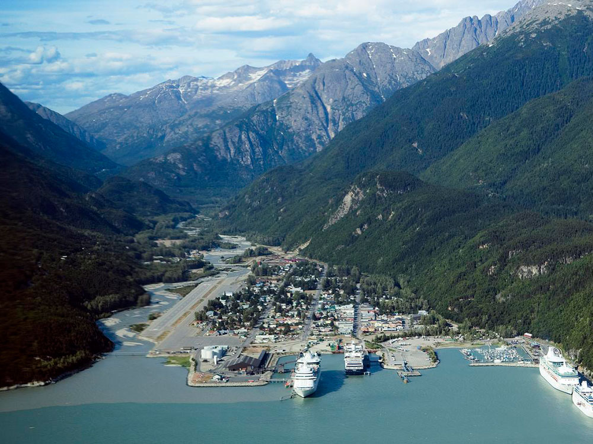
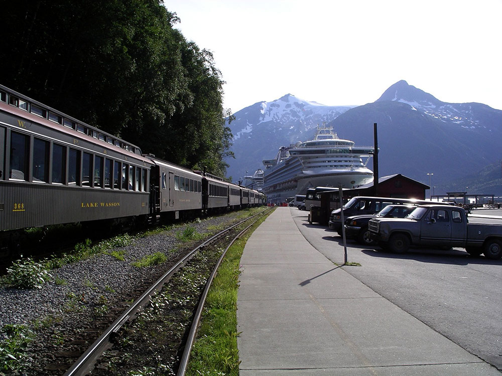

Historic gold rush town nestled between steep mountains and a deepwater inlet, known for its preserved architecture, vibrant harbor, and access to dramatic alpine scenery.
General Information
How to Get There
From Juneau (90 mi): Take a ferry or short regional flight north to Skagway, arriving at the harbor or airport, then continue into the compact downtown area near the waterfront.
Overview
Skagway is a small town at the northern end of the Inside Passage in Southeast Alaska, at the head of Taiya Inlet, and it is the gateway to the Klondike Gold Rush trails that thousands of prospectors followed in 1897 and 1898. It has about 1,000 year-round residents but welcomes more than a million cruise ship visitors each summer. The historic downtown, preserved as part of the Klondike Gold Rush National Historical Park, has false-front buildings and wooden boardwalks from the gold rush era.
Visitors come to Skagway for the White Pass & Yukon Route Railroad, a narrow-gauge train that climbs to the Canadian border, for the historic district, and for hiking the Chilkoot Trail. They also come for the Gold Rush Cemetery, for fishing, and for helicopter tours to glaciers.
History
The Tlingit people used the Skagway Valley as a trade route to the interior, and in 1887 Captain William Moore built a cabin and dock, anticipating a gold rush. When gold was discovered in the Klondike in August 1896, Skagway became a boomtown of about 20,000 people almost overnight, the starting point of the White Pass and Chilkoot Pass trails over the mountains to the Yukon. The outlaw "Soapy" Smith ran a gang of crooks in the town until he was killed in a shootout in July 1898. The White Pass & Yukon Route Railroad was built from 1898 to 1900, and the gold rush ended soon after, leaving the town much smaller.
Sightseeing and Popular Landmarks
The historic downtown has Broadway Street, with its wooden boardwalks, saloons, and restored buildings, and the Klondike Gold Rush National Historical Park visitor center in the old railroad depot has exhibits and a film. The White Pass & Yukon Route train ascends 2,865 feet in 20 miles on a historic route, and the Gold Rush Cemetery holds the graves of Soapy Smith and Frank Reid, who killed him. The Sons of Norway Hall and the Moore Cabin are other historic sites.
Culture and Museums
The Skagway Museum, in the Carnegie Library building, has exhibits on the Tlingit and the gold rush, and the Red Onion Saloon, a former brothel, is a museum and bar. Soapy's Parlor and the Days of '98 Show recreate the gold rush era, and the Skagway Fourth of July and the Buckwheat Ski Classic are local events. The Dyea townsite, once a rival boomtown, is now a ghost town in the national park.
Parks
The Chilkoot Trail, a 33-mile hike from Dyea to Bennett Lake in Canada, follows the route of the stampeders and is among the best-known hikes in Alaska, with permits required. Smaller trails, such as the Lower Dewey Lake and Yakutania Point trails, have views of the inlet. The Skagway River and Taiya River offer fishing, and Glacier Bay National Park is nearby.
Seasons and Weather
Skagway has a cool, subarctic maritime climate that is drier than the rest of Southeast Alaska. Summers are mild, with highs in the 60s°F, and winters are cold, with highs in the 20s and 30s°F and about 40 inches of snow. The tourist season runs from May to September, and many businesses close in winter, with strong winds common in the valley.
Things to Do
Step Back into Alaska's Gold Rush Era
Skagway is one of Alaska's most historic communities and served as a primary gateway to the Klondike Gold Rush of 1897-1898. Nestled between towering mountains and the waters of Lynn Canal, the town preserves its frontier character through restored buildings, museums, scenic railroads, and outdoor recreation opportunities that blend history with breathtaking scenery.
Ride the White Pass & Yukon Route Railroad
The White Pass & Yukon Route Railroad is Skagway's most famous attraction. Built during the Klondike Gold Rush, the historic railway climbs through rugged mountain terrain, passing waterfalls, deep gorges, glaciers, and dramatic alpine scenery. The journey offers visitors spectacular views while retracing the route traveled by gold seekers more than a century ago.
Explore Klondike Gold Rush National Historical Park
Much of downtown Skagway is preserved as part of Klondike Gold Rush National Historical Park. Visitors can tour historic buildings, attend ranger-led programs, view museum exhibits, and learn about the thousands of prospectors who traveled through Skagway in search of fortune in the Yukon.
Walk Through Historic Downtown Skagway
The town's wooden boardwalks, period storefronts, saloons, and restored buildings create one of Alaska's most authentic historic districts. Walking through downtown provides a unique opportunity to experience the atmosphere of a Gold Rush boomtown while visiting shops, museums, and local attractions.
Visit Dyea and Learn About Gold Rush History
Just outside Skagway lies Dyea, once a bustling settlement that served as the starting point for the Chilkoot Trail. Today visitors can explore interpretive sites, historical markers, scenic viewpoints, and wildlife habitats while learning about the abandoned town's role in Gold Rush history.
Take a Scenic Drive into the Yukon
The Klondike Highway is one of North America's most scenic roads. Guided tours and self-drive adventures take visitors over White Pass and into Canada's Yukon Territory, passing mountain lakes, waterfalls, alpine tundra, and sweeping wilderness landscapes.
Explore Nearby Glaciers
Several excursions from Skagway provide opportunities to experience Alaska's glaciers. Popular activities include helicopter tours, glacier landings, guided glacier hikes, and flightseeing adventures that showcase the region's spectacular icefields and mountain scenery.
Go Wildlife Viewing and Sea Kayaking
The waters surrounding Skagway offer opportunities to observe seals, sea lions, whales, bald eagles, and other wildlife. Guided sea kayaking excursions allow visitors to paddle through scenic coastal environments while enjoying unobstructed views of the surrounding mountains and waterways.
Pan for Gold
Several attractions near town allow visitors to experience the excitement of Gold Rush prospecting. Demonstrations and hands-on gold panning activities provide insight into the techniques used by the stampeders who traveled through Skagway more than a century ago.
Top Trails
Chilkoot Trail
Length: Approximately 33 miles one way
Elevation Gain: Significant mountain ascent
Difficulty: Strenuous
One of North America's most famous historic trails, the Chilkoot Trail follows the route used by Klondike Gold Rush prospectors traveling from Dyea to the Yukon. The trail combines extraordinary history, alpine scenery, waterfalls, and wilderness camping opportunities.
Lower Dewey Lake Trail
Length: Approximately 2.4 miles round trip
Elevation Gain: Approximately 500 feet
Difficulty: Moderate
This popular hike climbs through forested terrain to the scenic shores of Lower Dewey Lake. The trail offers beautiful mountain views and is one of the most accessible hiking options close to downtown Skagway.
Yakutania Point Trail
Length: Approximately 1.5 miles round trip
Elevation Gain: Minimal
Difficulty: Easy
A short and family-friendly trail, Yakutania Point leads to a scenic coastal viewpoint overlooking Taiya Inlet. Visitors can enjoy views of mountains, cruise ships, waterfalls, and marine wildlife while exploring a beautiful forest environment.
This article uses material from Wikipedia as well as information from official tourism and institutional sources. Key references include Skagway Convention & Visitors Bureau, National Park Service Klondike Gold Rush National Historical Park, White Pass & Yukon Route, Travel Alaska, and National Weather Service Juneau. Wikipedia material is from the articles "Skagway, Alaska" and "Klondike Gold Rush", and is available under the Creative Commons Attribution-Share-Alike License 3.0.
Featured Locations and Trails

Diego Delso, CC BY-SA 4.0, via Wikimedia Commons; Image Size Adjusted

Klondike Gold Rush National Historical Park
Historic park preserving restored gold rush-era buildings, rugged mountain trails, and stories of thousands who journeyed north in search of fortune during the late 1890s.

ThreeIfByBike, CC BY-SA 2.0, via Wikimedia Commons; Image Size Adjusted

Skagway Historic District and White Pass and Yukon Route
Preserved collection of wooden buildings and historic streets paired with a scenic railway route climbing through rugged mountains, showcasing the dramatic journey of gold rush travelers.














